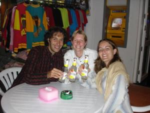

Le 23 décembre 2004,
La nuit à l’aéroport est longue... Arrivés vers 1 heure du matin, nous attendons une demi-heure pour pouvoir enregistrer nos bagages. Apres moult passages administratifs et de sécurité, nous pénétrons dans la salle d’embarquement sur les coups de 3 heures... L’avion décolle à 5 heures, pas trop le temps de piquer un petit somme dans l’aéroport. Une fois dans l’avion, entre les coups de coude du voisin de Michael et le gosse qui me donne de grands coups de pied dans mon siège derrière moi, impossible pour l’un comme pour l’autre de fermer l’œil... Le vol ne dure que 3h30 mais il est déjà 10h30 du matin, heure locale, lorsque nous arrivons a Bangkok. Une fois les bagages récupérés, nous cherchons, l’œil hagard, un taxi qui pourrait nous emmener jusqu’à la guest house réservée par Gaëlle quelques jours auparavant. Quelle n’est pas ma surprise de voir une petite blondinette se jeter sur moi avec un grand sourire ! Gaëlle est venue nous chercher et nous accueillir à l’aéroport alors que c’est à plus d’une heure de route du centre de Bangkok ! Elle est adorable notre petite Gaëlle... Et ça fait tellement plaisir de se sentir attendue quelque part !
Du coup, comme Gaëlle connaît le chemin, nous prenons plutôt un bus pour aller a Khaosan Road rejoindre notre guest house. C’est une rue très commerçante où tous les touristes se retrouvent pour faire la fête. Autant dire qu’il y a de l’ambiance... Ce sera sympa pour fêter Noël ! La guest house est très chaleureuse bien qu’un peu bruyante étant donné que nos fenêtres donnent sur un bar ouvert une bonne partie de la nuit, mais c’est le lot de toutes les guest houses de cette rue ! En tous cas, l’accueil des gérantes est adorable et c’est vraiment appréciable !
Apres un délicieux repas à l’hôtel à base de nouilles sautées, notre premier objectif est d’aller récupérer notre guide sur la Thaïlande que nous nous étions envoyés avant de partir. Nous partons donc pour la poste restante de Bangkok. Durant la route, nous pouvons apprécier la vie qui règne dans cette ville. C’est totalement différent de l’Inde : beaucoup plus moderne et occidentalisé. Les rues sont propres, les commerçants ne viennent pas nous aborder toutes les 3 minutes, au contraire, c’est limite si on ne les ennuie pas à vouloir acheter quelque chose chez eux... Par contre, nous ressentons bien la pollution avec cette chaleur ! D’ailleurs, afin d’éviter de trop nous intoxiquer avec les gaz d’échappement des voitures, taxis et tuk tuk (rickshaws a la thaïlandaise), nous décidons de prendre un bateau pour nous déplacer le long de la rivière Chao Phraya. Equivalent à des taxis, ça nous permet de mieux respirer et puis d’apprécier le paysage des maisons sur pilotis.
 Une fois le guide récupéré, un colis envoyé a mes parents, nous rentrons tranquillement a l’hôtel nous reposer. Michael et moi commençons a accuser le coup de la nuit blanche... Nous dînons dans un restaurant a touristes tout à fait médiocre, mais ça ne fait rien, nous sommes contents d’avoir retrouver Gaëlle et nous passons un très bon moment a nous raconter nos péripéties respectives ! Maintenant, il faut penser à récupérer un peu de sommeil donc tout le monde au lit (sans oublier les boules-quies) !
Eve-Laure
{kind=link}